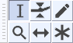
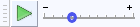

View Menu: Toolbars
- The Meter toolbars are a special case. You may have one or both of the separate Recording and Playback Meter toolbars visible (both are visible by default). Alternatively you can have only the Combined Meter Toolbar visible (which displays recording and playback levels in a single meter).
- Click, or hover, on any menu item in the image to read about that command. Skip the image
Reset Toolbars
Using this command positions all toolbars in default location and size as they were when Audacity was first installed.
See this page for information on arranging your Toolbars.
Transport Toolbar

- Controls playback and recording and skips to start or end of project when neither playing or recording.
Tools Toolbar
- 
- Chooses various tools for selection, volume adjustment, zooming and time-shifting of audio.
Recording Meter Toolbar
-
- Displays recording levels and toggles input monitoring when not recording.
Note the two vertical bars at the right of this toolbar which mean that this toolbar can be resized by clicking and dragging on the bars.
- Displays recording levels and toggles input monitoring when not recording.
Playback Meter Toolbar
-
- Displays playback levels.
Note the two vertical bars at the right of this toolbar which mean that this toolbar can be resized by clicking and dragging on the bars.
- Displays playback levels.
Mixer Toolbar

- Adjusts the recording and playback volumes of the devices currently selected in Device Toolbar.
Edit Toolbar

- Cut, copy, paste, trim audio, silence audio, undo, redo, four zoom tools.
Transcription Toolbar
- 
- Plays audio at a slower or faster speed than normal, affecting pitch.
Scrub Toolbar

- Starts, stops or switches to Scrub play or Seek play, and hides or displays the Scrub Ruler.
- This toolbar is not shown by default. Select to show the toolbar, which by default docks in the upper dock.
Device Toolbar

- Selects audio host, recording device, number of recording channels and playback device.
Note the two vertical bars at the right of this toolbar which mean that this toolbar can be resized by clicking and dragging on the bars.
- Selects audio host, recording device, number of recording channels and playback device.
Selection Toolbar

- Controls the sample rate of the project, snapping to the selection format and adjusts cursor and region position by keyboard input.
The default position of Selection Toolbar is at the bottom of the main Audacity window, thus it is not visible in the Toolbars image at the top of this page.
- Controls the sample rate of the project, snapping to the selection format and adjusts cursor and region position by keyboard input.
Spectral Selection Toolbar

- Displays and lets you adjust the current spectral (frequency) selection without having to be in Spectrogram view.
- This toolbar is not shown by default. Select to show the toolbar, which by default docks in the lower dock, beside or under Selection Toolbar.
- Choose your preferred format option from the dropdown menu above the boxes: Center frequency and Width
 or Low and High Frequencies .
or Low and High Frequencies .